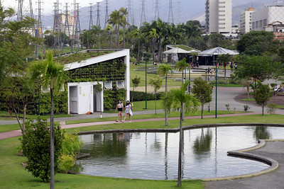

Parque Madureira

Parque Madureira Mestre Monarco é um parque de 450 mil metros quadrados, inaugurado em 23 de junho de 2012 e ampliado em 2015, situado entre os bairros de Madureira e Guadalupe, na Zona Norte da cidade do Rio de Janeiro.
Como chegar?
Ônibus: linhas 265 ,766, 774, 800L e SV774. Metrô: a estação mais próxima é a Cidade Nova (linha 2 - verde). Trem: as estações mais próximas são Ramal Belford Roxo, Ramal Japeri e Ramal Santa Cruz
O que fazer?
O Parque de Madureira é um espaço que se estende de Madureira ate Rocha Miranda, dois bairros do Rio de Janeiro. Com pista de patins, skate, praia artificial, Nave do conhecimento, Lagos, quiosques, ciclo vias, palco para atrações e outras atrações que agrada as crianças e os adultos.
Horário de funcionamento:
6h às 22h